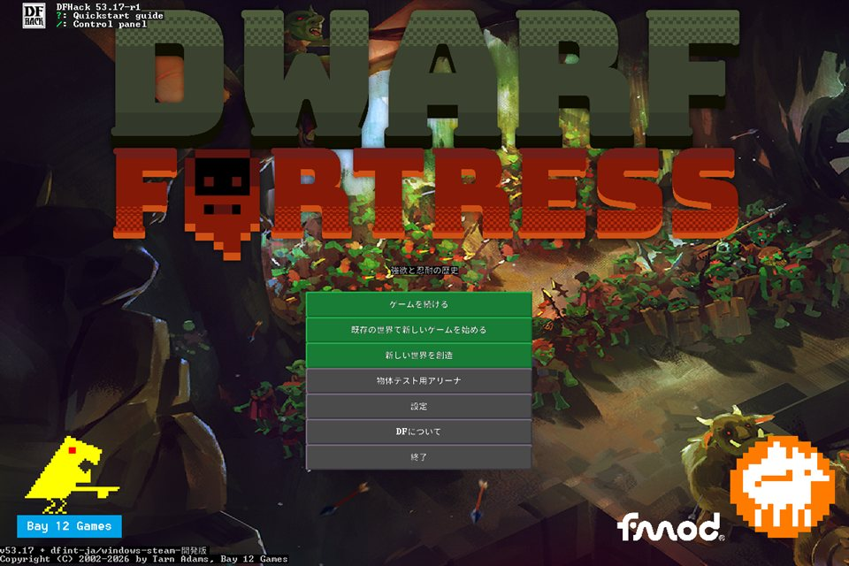
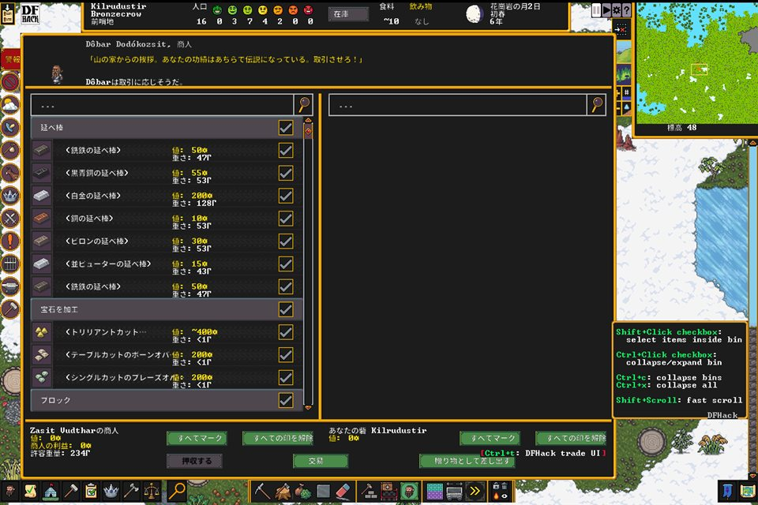
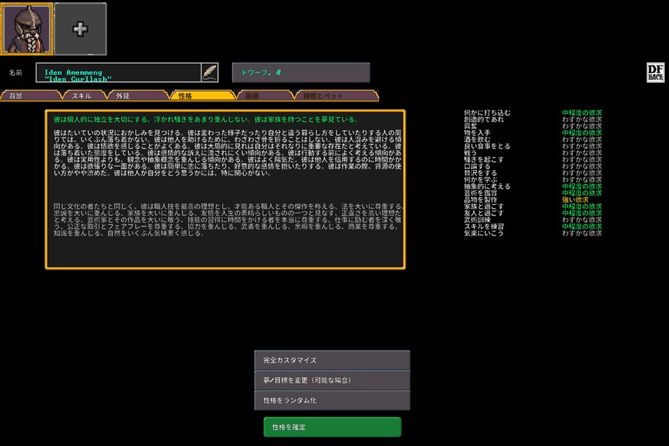

どんなふうに見えるか




できること
- メニュー・画面の文字をほぼすべて日本語に（入植、要塞、冒険、伝説、世界生成、設定、闘技場）。
- ゲームが組み立てる名前も訳します。「ヤクの革のドレス」「シングルカットのプレーズオパール」のように、材質・生き物・品物の組み合わせを辞書から組み立てます。
- 世界生成で作られる名前にも対応。「吹雪の怨霊」「トカゲの魔物」のような夜の生き物や悪魔の名前は、ゲームが世界ごとに違う組み合わせで作りますが、語彙を集めてあるので訳せます。
- 戦闘の記録・住民の会話・思考など、文の型から組み立てられる文章も訳します。
- DFHack と併用できます。 DFHack 自身の表示（操作パネル、建設の計画、隊商の取引）もほとんど日本語になります。
- ゲーム中に Ctrl+F2 で日本語化のオン／オフを切り替えられます。
ゲームのファイルは書き換えません。
Dwarf Fortress.exe にも data\ の中身にも手を加えず、
DLL とデータを置くだけです。外すときは置いたものを消すだけで元に戻ります。
入れかた
最新版の zip をダウンロードし、 中身を Dwarf Fortress のフォルダにそのまま重ねてコピーするだけです。
Dwarf Fortress\ dfhooks.dll … 橋渡し役 dfhooks_dfint_ja.dll … 日本語化の本体 dfint-data\ … 辞書・フォント・設定
DFHack を使っている場合は
dfhooks.dll がすでにあります。
それだけは上書きしないでください。残りの2つをコピーすれば動きます。
あとから DFHack を入れた場合も、そのまま動きます。
外しかた
置いた3つを消すだけです（DFHack を使っている場合は dfhooks.dll を残してください）。
仕組み
ゲームが文字を描く関数に割り込んで、英語の文字列を辞書で引き、日本語に差し替えてから 自前のフォントで描き直しています。英語の文字列そのものを置き換えるのではないので、 セーブデータには何も影響しません。
| 1行の文字列 | 辞書で完全一致を引く。見つからなければ「材質＋品物」のような組み立ての表で引く |
|---|---|
| 長い文章 | ゲームは単語ごとに描くので、単語の配列を作る関数ごと差し替える |
| 組み立てられた文 | 「書き出し＋本体＋後ろの句」の部品に分けて、日本語の語順で組み直す |
| DFHack | dfhack.dll が公開している描画関数に別途割り込む |
詳しくは docs/architecture.md を見てください。
翻訳を直したい・別の言語を作りたい
辞書は translations/ のタブ区切りファイルです。英語と訳を並べて書き、
python tools/build.py で組み立て直すだけで反映できます。
フォントと辞書を入れ替えれば日本語以外の言語にも使えます。
手順は docs/translating.md にまとめてあります。ゲームを起動せずに訳を確かめる道具も入っています。
できないこと
- 人名・地名・世界で作られた名前（忘れられし獣の名前など）は英語のままです。ゲームが世界生成のときに作るもので、訳す対象がありません。
- 画面の幅はゲームが英語の文字数で決めるため、訳が長いと隣の表示と重なることがあります。目立つところは「…」で切るようにしています。
- DFHack のタブの見出し（Automation など）とツール名は英語のままです。
- ゲームが更新されると、関数の位置が変わって動かなくなることがあります。
非公式のMODです。セーブデータのバックアップを取ってからお使いください。